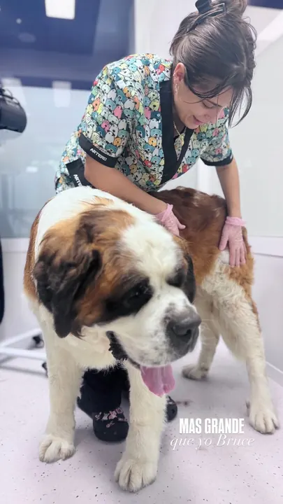
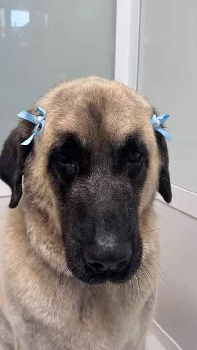

Menos pelo desprendido
Ayuda a retirar el pelo suelto durante la muda.
Para esos días en los que parece que hay otro perro en el sofá. Cuidamos la muda desde el manto.
 adiós, pelos sueltos
adiós, pelos sueltosEl deslanado ayuda a retirar el subpelo que ya se está desprendiendo. Combinamos el trabajo de cepillado con el baño y el secado que necesite cada manto, sin tratar todas las capas de pelo de la misma manera.
Los perros grandes pueden necesitar una sesión larga y tranquila. Reservamos tiempo suficiente y hacemos pausas: retirar más cantidad de pelo nunca justifica insistir sobre una piel sensible.
Ayuda a retirar el pelo suelto durante la muda.
Trabajamos las acumulaciones de subpelo.
Elegimos herramientas y técnica según el manto.

Perros de doble capa y mantos con abundante subpelo, como golden retriever, pastor alemán, husky o sus cruces. También perros de pelo corto con muda, con una técnica adecuada a su piel.
Localizamos acumulaciones, nudos y zonas sensibles.
Preparamos el pelo para soltar el subpelo desprendido.
Trabajamos por zonas sin insistir en exceso.
Te mostramos el cepillado más útil entre visitas.
«¡Aunque tengan el pelo cortito, también necesitan sus buenos deslanados!»
Pulsa para verlo con el reproductor de Instagram. No cargamos nada de Instagram hasta que tú lo decides.
Fotos de clientes de Pelucans. Pulsa para ampliar.



No. La muda es natural. El servicio retira pelo que ya está suelto y ayuda a mantener el manto, pero no elimina el ciclo de muda.
No. Deslanar retira subpelo desprendido; rapar acorta el pelo. Valoramos cada manto antes de recomendar cualquier corte.
Sí. Cuéntanos su tamaño, cantidad de pelo y cómo tolera el secado para organizar una cita con tiempo suficiente.
Cuéntanos cómo es, qué le gusta y qué necesita. Del resto nos encargamos nosotros, con calma.